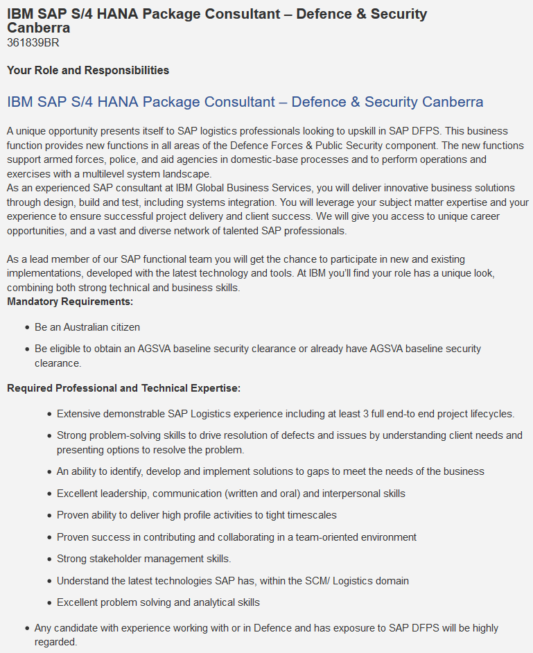
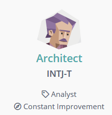
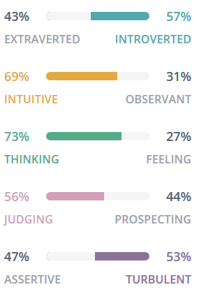
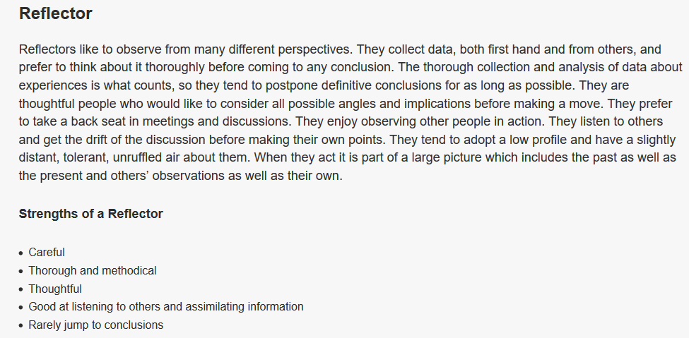
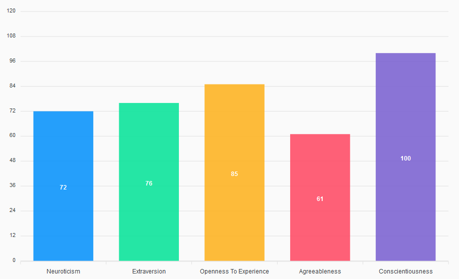

Personal Information
Personal background:I grew up in Zimbabwe on a farm north of Harare and immigrated to Australia in 2005 due to political turmoil in the country. Upon completing my schooling, I joined the Army and attended the Australian Defence Force Academy in 2008, where I studied engineering (Civil). Upon graduating from my training in 2012 I worked as a Supply Officer and in my later years specialised in Logistic Information Systems.
Interest In IT:My interest in IT started when I went to university the first time. One of our early classes was in using MATLAB for doing our calculations and modelling. It was far superior in terms of accuracy, speed, and error checking compared to doing work by hand. From then on, I was always looking for ways IT could make my work easier. I have relied upon IT systems for my whole career in logistics with experience across supply, maintenance, operations planning and finance tools. For the last two years I have been working on a large IT project, the Defence Enterprise Resource Planning program, which has led me to the decision that I would like to pursue a career more focused on IT. This decision to pursue IT is why I have commenced my studies at RMIT and specifically RMIT because it allows me to study while I work full time, though balancing the two can be hard at times. During my studies I am seeking foundational knowledge in IT as well as a better understanding of IT security and Software development.
Ideal Job
Position Description:The advertised position is for a consultant who specialises in SAP Defence & Security (or DFPS being the previous product) and software integrations. It will likely involve:
Skills
| Skills, qualifications, and experience required for the position | What I have | What I need to work towards |
|---|---|---|
| Understanding the client’s business. In this case specifically the Department of Defence and security forces | 13 Years of Defence experience having worked as a logistic planner for exercises/operations, staff officer appointments, time as a sustainment manager and working in IT development. | I need to broaden my experience to other Defence and security services other than Army to understand their business needs. This is being achieved in my current role where I am in continuous contact with the other defence services to learn about their business needs. Similar lower-level jobs to that advertised with civil police and in other nations will also increase my suitability regarding this requirement. |
| Experience - SAP Logistic experience and 3 full project lifecycles | Currently working through my first project lifecycle | More implementation projects. This will likely require leaving the country to work with other nations as a D&S contractor |
| Relevant Bachelor's Degree | Civil Engineering Bachelor’s | I need to work towards a relevant qualification in IT therefore I have started the IT Bachelors. To be more competitive I will need likely need a master’s in Enterprise Systems or Business IT. |
| SAP training | D&S, Supply and Maintenance user training | Attaining proficiency in the SAP product integration courses |
| Leadership and Communication | DLeadership appointments ranging from small team of specialists to a Logistic Company of 120 people. Communication developed though command roles, training appointments and writing instructions as a staff officer. | To better transition to civilian employment, I will need to soften my approach in dealing with people. This is being developed in my current role working with civilian contractors. |
| Ability to communicate configuration and design decisions to software developers | 2 years of on-the-job experience. Mostly being educated by the Software developers on what they require from the client to do their work. | Better my understating of software development through formal training to gain a broad knowledgebase on software development and IT |
Personal Profile
Myers-Briggs test
 What do the results of these tests mean for me: The test results indicate that I am likely to be a productive worker but will likely have to make extra effort to work effectively as part of a team and in dealing with other people. In exploring what the results mean in detail it seems to be a good fit given my life experience so far. I seem to have chosen a good career path as I am expected to be very specialised, and the workplace culture is very much built about being upfront and direct around issues and shortcomings.
How do I think these results may influence my behaviour in a team:The results indicate a natural tendency towards being difficult to work with, at least for many other personality types. I can be arrogant, dismissive of people’s feelings, overly critical and combative. Conversely, I am well suited to detailed analysis and will provide detailed frank feedback on work.
How I should take this into account when forming a team:If the task permits working on a lone-wolf position or in a small group/pair is preferable. I need to be mindful that criticism needs to be delivered tactfully and that an effort needs to be made the ensure that it is not taken personally.
Online learning style test
What do the results of these tests mean for me: The test results seem to generally agree with the results of the Myers-Briggs test. The test results tell me that I prefer to thoroughly digest information before settling on conclusions. It also indicates that I prefer a very complete understanding of a topic before I move on meaning I would tend to want to learn less by practice and more on theory. I disagree with its assessment that I prefer to take a back seat in meetings. I think that this sentiment is rather a reflection of my learning style where I prefer to be “on receive” more so than learning through discussion and engagement.
How do I think these results may influence my behaviour in a team:I agree with the assessment that I will tend to listen to others while I figure out the drift of the conversation and then provide input when I have grasped the issue being discussed.
How I should take this into account when forming a team:When the team undergoes formation and undergoes its stages of group development (thinking the Tuckman's stages of group development: forming–storming–norming–performing) I need to make a conscious decision to be more assertive than I would normally to ensure that my view is heard as the group develops a course of action.
Big Five Personality test
What do the results of these tests mean for me: Neuroticism and extraversion are roughly in the neutral spectrum. The three standout characteristics for me are conscientiousness and openness with agreeableness being my greatest drawback. I agree with the results for the Myers-Briggs more than this one mainly because many of the questions in this one tended to lack needed context which I would have to make up.
How do I think these results may influence my behaviour in a team:Low agreeableness means that I will tend to be less sociable with my team and will put my own goals and objectives over theirs. The high conscientiousness will make me drive goal orientated tasks and openness will make me open to peoples’ ideas if I can see the merit in them.
How I should take this into account when forming a team:Low agreeableness means that I need to try to hear people out and fully understand their perspective before providing input. Being high on conscientiousness means that I will we good at goal setting for the group and keeping us on a timeline.
Project Idea – Org tree builder
Overview
The aim of this project is to develop a tool (Excel Add-in) for building hierarchy diagrams using data that contains a parent child hierarchy. The tool will be used to take organisational data from a report exported from a database for service such as such PeopleSoft and generate an organisational chart that represents the organisation. The only software required for the end user of the tool will be Excel, the add-in and Adobe PDF reader.
Motivation
The Department of Defence and other large organisations are continuously undergoing organisational establishment reviews. This process is a review of departments as well as peoples’ positions within them. As part of this diagrams are built to represent current and future state of the organisation for them to undergo review. The method for generating these diagrams is using Visio to generate reports from Excel data, which can be extremely time consuming even when using the import feature and prone to human error. There are no fee alternatives that meet the desired output format of an organisational diagram.
Description
The Proposed add-in will exist to support the generation of organisational charts as part of the Level 3 business process – Review organisational structure. The process in context of the relevant business process hierarchy is as follows: